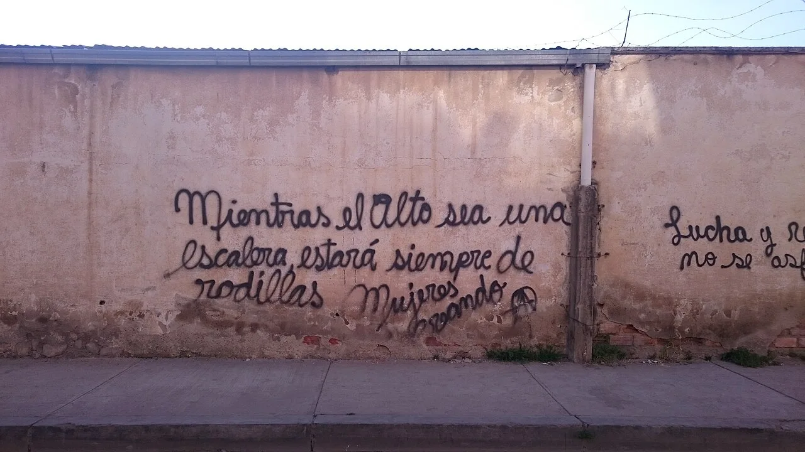
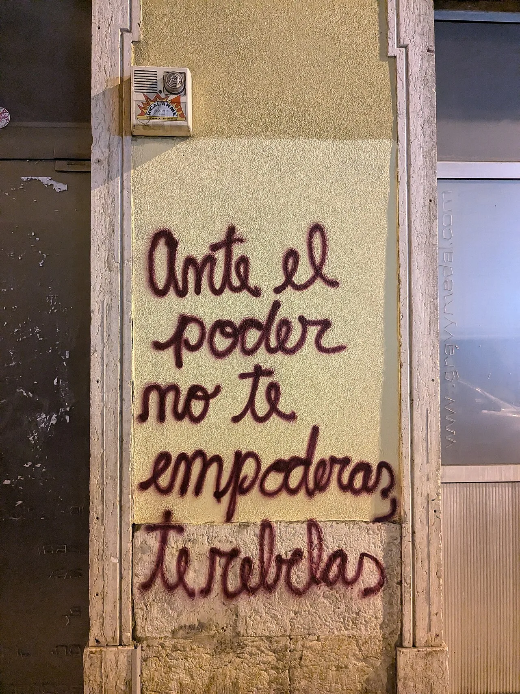

La inscripción de El Alto se concentra en una pared larga y baja. La frase ocupa un tramo de muro sin convertirlo en una imagen de gran formato; conserva el ritmo de una escritura. Esa elección hace que el encuentro dependa de aproximarse y leer. La intervención puede ser reconocible sin cubrir toda la superficie disponible.
La firma cambia el estatuto de lo escrito. Una frase aislada puede circular como un pensamiento disponible para cualquiera; una atribución introduce una voz que responde por ella. En el registro fotográfico identificado con Mujeres Creando, la relación entre texto, firma y pared permite observar una toma de posición pública. El soporte urbano no es solamente el fondo de una composición gráfica.
El Museo Reina Sofía documentó una exposición de Mujeres Creando entre diciembre de 2000 y enero de 2001. Reunía videos de acciones, escritura en las salas y presencia de integrantes para conversar. La ficha sitúa el trabajo del grupo desde 1992 y recoge su oposición al machismo y a otras formas de dominación. Es un antecedente concreto, no una descripción completa de su trayectoria posterior. [1]


La escala de la letra organiza la enunciación. Una escritura puede mantener cercanía con el gesto de quien la hizo, mientras una tipografía monumental introduce otra distancia. Ninguna opción garantiza por sí sola eficacia política. En una pared importan también la altura, el contraste y el recorrido desde el que la frase se encuentra. La lectura ocurre en un lugar con otras señales y otros usos.
El segundo registro acompaña una inscripción atribuida a Mujeres Creando en una calle de Lisboa en 2024. La diferencia geográfica importa: no es otra imagen de Bolivia. Permite plantear qué sucede cuando una voz viaja y se encuentra con un público distinto. Para reconstruir esa acción harían falta datos de ejecución; la fotografía conserva una presencia y una atribución, no toda su historia.
La reproducción editorial introduce un desplazamiento parecido. Al recortar una frase de su pared, una publicación puede hacerla accesible y perder la relación con el entorno. Un pie que conserve lugar, fecha y procedencia devuelve una parte de esa información. Convertirla en un lema decorativo elimina tanto la situación de lectura como la capacidad de reconocer quién habla.
La entrada al museo añade otra diferencia. El visitante llega dispuesto a observar una obra, mientras la persona que encuentra una pared puede no haber buscado ningún encuentro artístico. La exposición de 2000–2001 incluía conversación con integrantes del colectivo, según su ficha. Ese componente recuerda que trasladar una práctica no consiste únicamente en copiar su apariencia sobre una superficie nueva. [1]


El museo identifica también a María Galindo como cofundadora y documenta su actividad en 2020. Mantener una trayectoria nombrada ayuda a no reducir Mujeres Creando a un repertorio de frases sin responsables. Al mismo tiempo, una figura conocida no debe sustituir el examen del trabajo colectivo. La atribución precisa requiere distinguir nombres, proyectos y fechas. [2]
Lo menos interesante sería usar esta escritura como un estilo para dar rebeldía a cualquier marca. Su fuerza depende de una relación entre mensaje y posición, además del gesto gráfico. La letra manual no vuelve disidente a un enunciado por contacto. Para comprender lo que una intervención modifica hay que leer lo que afirma, a quién se dirige y qué hace posible el soporte escogido.
Una frase no cambia la propiedad de una pared. Puede cambiar, sin embargo, quién tiene voz visible en ella y cómo se discute su sentido. La pregunta de diseño es concreta: qué forma permite que un enunciado sea encontrado, leído y reconocido como posición. La intervención empieza con palabras; su alcance se decide en las relaciones que abre.
Fuentes.
- Museo Reina Sofía — Mujeres Creando. Ten cuidado con el presente que construyes…, exposición de 2000–2001
- Museo Reina Sofía — María Galindo: actividad y trayectoria, 2020
- Fichas de las fotografías: inscripción en El Alto, 2016, e inscripción atribuida a Mujeres Creando en Lisboa, 2024
Análisis documental y visual, sin entrevista a integrantes del colectivo. La fotografía de Lisboa conserva la atribución de su ficha; no se verificó quién ejecutó esa inscripción. El título alude a la voz pública, no a un cambio de propiedad legal.
Fuentes consultadas el 15.11.2026. Análisis e interpretación: RUMMOR. Edición privada para revisión.